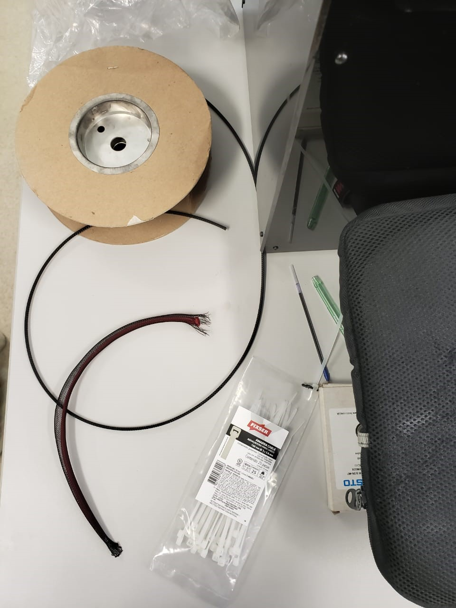

Materiales:
-Un globo pencil
-Malla trenzada flexible Overexpanded Expandable Braided Mesh Sleeve (¼’’)
-Encendedor
-Zip
-Conector arponado
Metodologia:
1.) Tomar el zip y cerrarlo por un extremo de la malla trenzada dejando 2 o 3 mm hacia fuera. Mantener la llama del encendedor en dicho extremo hasta que los hilos se derritan y se unan.
2.) Cortar la tira sobrante del zip. El extremo sellado no debería abrirse aunque se la malla trenzada se comprima por este extremo


3.) Colocar el globo dentro de la malla trenzada
4.) Cortar el globo y la malla trenzada de modo que tengan el mismo tamaño